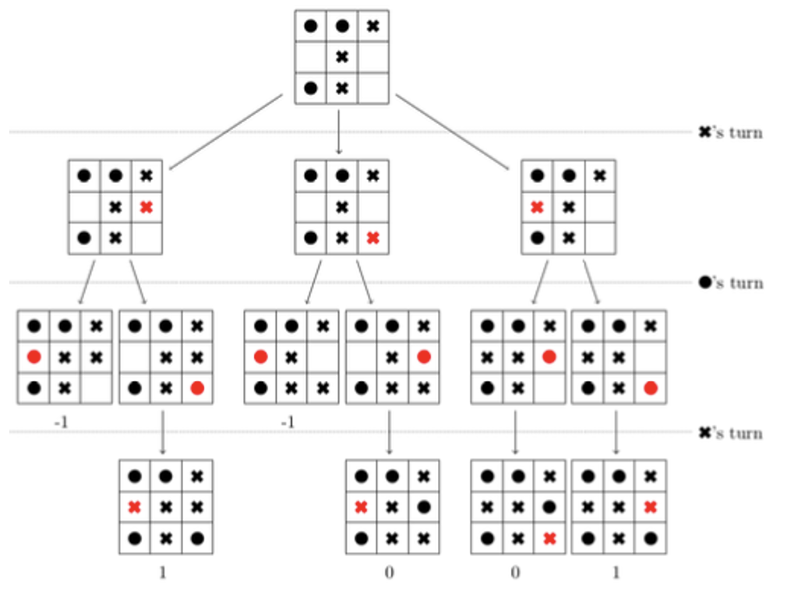

Engineering
In the module project of module 6, the goal was to design a solution for a problem in the area of movement and learning. In the first weeks me and my team brainstormed about multiple common problems of the world right now, and finished off by choosing a single problem: students' work behaviour during the covid-19 pandemic.
We desgined a small online platform connected with a device that could be placed on a desk, called the studesk. The main idea is that a daily schedule could be chosen at the beginning of the day (or the user makes a customized one) which entails the working hours, social hours and breaks.
After that, the phone is placed on a small platform on the desk, out of the view of the user. A small screen is connected to this platform, where the user can see how much time is left that he/she has to study. If the user takes their phone off earlier than they are intended to do, the device will give an alarm and push them to place their phone back on the holder.
When it is time for a break, they are allowed to take their phone off the holder, and it will connect them to an online app. In this app, all their friends are visible and it shows them who is having break with them at the same time. It shows them suggestions for interactions and relax activities for in their break.
It also shows the amount of times they took their phone off when they were not allowed to, which will be showed to their peers, hoping this will motivate them to stop doing it.
Python
In this course we learned about Artificial Intelligence, a hot topic today in the computer science environment. The course existed of 2 parts, a theory part and a practice part.
In the theory part we learned about the history of AI, search methods, recursion, pruning, heuristics, chance, machine learning, neural networks and decison trees, linear/logistic classification, logic presentation and reasoning probablistic logic.
In the practice part we first learned about python, then we inplemented algorithms of search and algorithms of recursion, such as tic-tac-toe.
